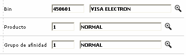
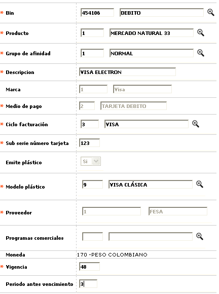
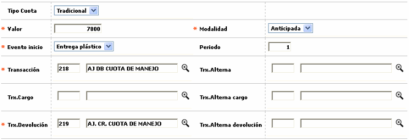
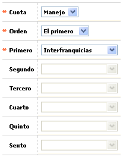
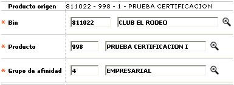
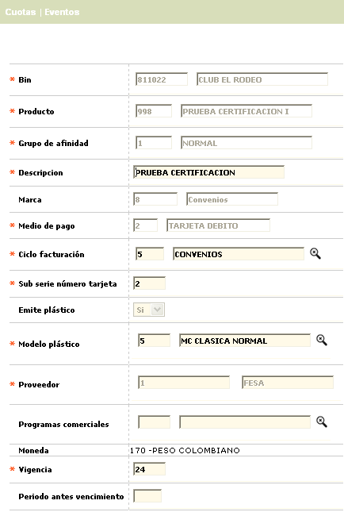
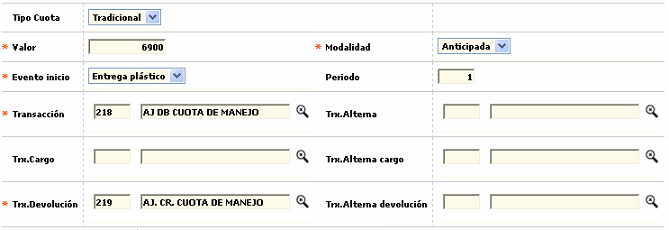
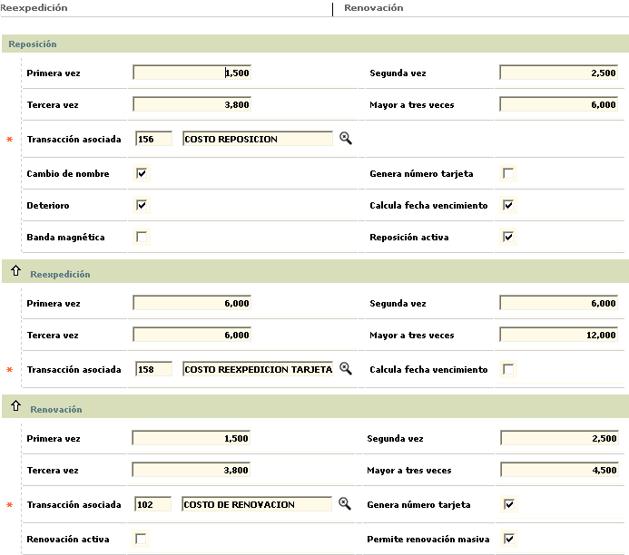
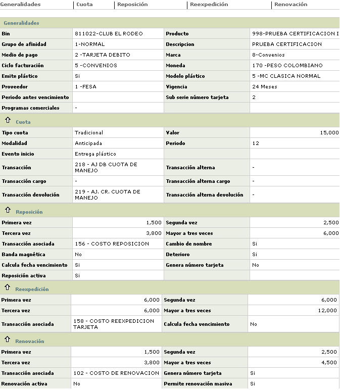

Definiciòn de productos débito |
Desde este formulario la entidad puede definir la combinaci�n de bines, segmentos y grupos de afinidad que van a conformar los diferentes productos débito a ofrecer a sus clientes.
El formulario contiene en la parte superior el hipervínculo Copiar producto que permite replicar todos los parámetros de un producto existente en un nuevo producto, agilizando el proceso de creación de productos débito. Y la opción Orden aplicación cuotas en la cual se establece la jerarquía de su aplicación.
Al ingresar a la opción, se despliega un filtro que permite consultar la informaci�n espec�fica para los productos pertenecientes a un bin, segmento o grupo de afinidad en particular. Por defecto al ingresar al formulario muestra todos los productos definidos actualmente.


Este formulario contiene los hiperv�nculos Cuotas y Eventos con los cuales se invocan otros formularios en los que el usuario puede adicionar mas par�metros para el nuevo producto. Adicionalmente muestra las opciones Actualizar, Eliminar, Adicionar y Detalle.
Adicionar: si el usuario invoca la opci�n Adicionar se despliega un formulario con los siguientes campos.

Descripci�n de campos
Bin |
Campo obligatorio con lista de valores de la cual se selecciona el bin o prefijo con el cual se va a crear el nuevo producto. |
Producto |
Este campo obligatorio contiene lista de valores de la cual se selecciona el producto o segmento que va a conformar el nuevo producto. |
Grupo de afinidad |
Campo obligatorio con lista de valores de la cual se selecciona el grupo de afinidad que junto con el bin y el segmento van a conformar el nuevo producto. |
Descripci�n |
Este
campo alfanumèrico de hasta 30 caracteres, obligatorio, permite registrar el nombre o descripci�n del nuevo producto a crear. |
Marca |
Campo
de salida que a partir del bin despliega la marca o franquicia a la cual pertenece el producto a crear. |
C�digo medio de pago |
Este campo de salida muestra el tipo de medio de pago y que para el caso es '2 Tarjeta débito' |
Ciclo de facturaci�n |
Campo
obligatorio con lista de valores de la cual se selecciona el ciclo
de facturaci�n que por defecto van a tener todas las tarjetas asociadas
con el nuevo producto. |
Subserie n�mero de tarjeta |
En este campo de hasta tres d�gitos se registrar un valor fijo que de acuerdo con lo definido por la entidad puede o no hacer parte del n�mero de la tarjeta. |
Emite
plástico |
Campo de salida que siempre esta en Si para las tarjetas pertenecientes al producto se debe generar un plástico. |
| Modelo plástico | Campo obligatorio y contiene una lista de valores de la cual se selecciona el modelo de plástico que se va a utilizar durante el proceso de realce de las tarjetas pertenecientes al producto. |
Subserie
n�mero de tarjeta |
En este campo que se habilita y convierte en obligatorio cuando se ha marcado que el producto si emite plástico, se selecciona de la lista de valores el modelo a utilizar durante el proceso de realce de las tarjetas. |
Proveedor |
Campo de salida que despliega el código y nombre del proveedor que suministra el plástico para el realce de las tarjetas. |
Programas
comercials |
En este campo con lista de valores se puede seleccionar el programa comercial que de acuerdo con sus caracter�sticas se ajuste m�s al nuevo producto para ofrecer al cliente algunos privilegios adicionales. |
| Moneda | Este campo muestra la moneda del producto débito. |
Vigencia |
Campo num�rico de hasta dos d�gitos en el que se registra la cantidad de meses de vigencia que van a tener las tarjetas pertenecientes al nuevo producto. |
Periodos
antes del vencimiento |
En este campo se registra la cantidad de periodos que el sistema debe evaluar con relaci�n a la fecha actual de vencimiento de la tarjeta para determinar si debe o no hacer renovaci�n autom�tica de la fecha de vencimiento, espec�ficamente cuando se est�n procesando solicitudes de reposici�n o reexpedici�n. |
Si el usuario lo desea y por comodidad tambi�n, es posible adicionar inicialmente el producto diligenciando �nicamente los campos obligatorios del formulario inicial y posteriormente, una vez que el producto haya sido creado agregar la informaci�n de cuotas y eventos mediante la actualización del registro.
Cuotas: si el formulario inicial el usuario invoca el hipervìnculo Cuotas se despliega un nuevo formulario que le permite a la entidad definir los par�metros necesarios para el cobro de la cuotas de manejo que se va a cobrar para el nuevo producto. Contiene el hipervínculo Orden aplicación cuota que le permite a la entidad definir la manera como el sistema debe evaluar aquellos parámetros que pueden afectar el monto a cobrar por concepto de la cuota de manejo.

Descripci�n de campos
Tipo
cuota |
Campo tipo combo obligatorio, en el cual se puede seleccionar Tradicional para indicarle al sistema que debe cobar el monto definido en el campo Cuota. |
Valor |
Este campo obligatorio, de hasta 14 enteros y 2 decimales se registra el valor a cobrar por concepto de cuota de manejo para las tarjetas pertenecientes al nuevo producto. |
Modalidad |
Campo obligatorio
tipo combo, que le permite a la entidad seleccionar entre anticipada o vencida la manera como ser� cobrada la cuota para las tarjetas del nuevo producto. |
Evento
inicio |
En este campo obloigatorio tipo combo que solo contiene la opción Entrega pl�stico se le indica al sistema el evento que al producirse va a generar el inicio del cobro de la cuota para la tarjeta. |
Periodos |
Campo
num�rico que admite valores entre 1 y 12, en el que se indica la
cantidad de periodos que determina la frecuencia con la cual se
va a efectuar el cobro de la cuota para las tarjetas pertenecientes
al nuevo producto. |
Transacci�n |
En
este campo con lista de valores se selecciona la transacci�n
interna con la cual se va a registrar el cobro de la cuota
en caso que se cumplan las condiciones para generar dicha cuota. |
Transacci�n alterna |
Campo con lista de valores que permite seleccionar la transacci�n interna que se va a generar para el cobro de la cuota en caso de presentarse consumos en el exterior. |
Transacci�n cargo |
Si la modalidad se ha definido como Vencida y el producto es cancelado o devuelto por el cliente antes de cumplir los periodos para el cobro de la cuota respectiva, en este campo que contiene lista de valores se selecciona la transacci�n interna mediante la cual se le va cargar al cliente el valor proporcional de la cuota liquidada desde la fecha del �ltimo cobro hasta el momento de la cancelaci�n. |
Transacci�n alterna cargo |
Campo con lista de valores que permite seleccionar la transacci�n interna que se va a generar para el cobro proporcional de la cuota vencida cuando la tarjeta sea cancelada antes de cumplirse los periodos para el cobro de la cuota y se hayan presentado consumos en el exterior. |
Transacci�n devoluci�n |
Si la modalidad se ha definido como Anticipada y el producto es cancelado o devuelto por el cliente antes de que se causen los periodos cobrados, en este campo obligatorio que contiene lista de valores, se selecciona la transacci�n interna mediante la cual se le va hacer reintregro o devoluci�n al cliente del valor proporcional de la cuota liquidada desde la fecha de la cancelaci�n hasta el final del periodo ya cobrado. |
Transacci�n alterna devoluci�n |
Campo con lista de valores que permite seleccionar la transacci�n interna que se va a generar para la devoluci�n proporcional de la cuota anticipada cuando la tarjeta sea cancelada antes de haberse causado los periodos cobrados y se hayan presentado consumos en el exterior. |
Orden aplicación de cuotas: si desde el formulario de cuotas el usuario invoca el hipervìnculo Orden aplicación de cuotas se despliega un nuevo formulario que le permite a la entidad determinar el orden o jerarquía que se tendrá en cuenta para la aplicación de algunos descuentos preferenciales y exoneraciones definidos en Promociones para colocación, Categorías de clientes, Programas comerciales, Convenios o Parámetros Interfranquicias y que serán evaluados por el sistema al momento de calcular el valor a cobrar al cliente por concepto de cuota de manejo tomando en cuenta que un mismo cliente y/o producto pueden estar incluidos simultáneamente en varias de las opciones mencionadas y por consiguiente tener derecho a diferentes privilegios, de acuerdo con lo parametrizado en cada una de esas opciones.

Descripción de campos
Tipo
de cuota |
Campo obligatorio con lista de valores de la cual se selecciona Manejo para indicarle al sistema el tipo de cuota para la que se va a parametrizar el orden de aplicación. |
Tipo
de orden |
Este campo obligatorio tipo combo permite seleccionar entre El primero o En cascada, la manera como el sistema debe evaluar los diferentes eventos definidos para el cálculo de la cuota. |
Primero |
Campo obligatorio con lista de valores de la cual se selecciona entre Interfranquicias, Programa comercial, Programa promoción, Categoría cliente o Convenios el evento que se debe evaluar en primera instancia. |
Seguno
/ Tercero / Cuarto / Quinto / Sexto |
En estos campos tipo combo no obligatorios y que se habilitan únicamente cuando el tipo orden sea En cascada, se selecciona entre Interfranquicias, Programa comercial, Programa promoción, Categoría cliente o Convenios el orden en el que se debe evaluar cada uno de los eventos seleccionados para efectos de calcular la cuota respectiva. |
El formulario se encuentra estructurado en 3 bloques de datos: Reposici�n, Reexpedición y Renovación con los siguientes campos.

Descripci�n de campos
Reposición
primera vez / Segunda vez / Tercera vez / Mayor a tres veces |
En estos campos num�ricos de 14 enteros y 2 decimales, se registran respectivamente los montos que la entidad cobrar� al cliente cada vez que se haga una reposici�n de la tarjeta, acorde con la frecuencia o cantidad de veces que este evento se haya presentado. |
Transacci�n asociada |
Si cualquiera de los campos anteriores contiene un valor, este campo se convierte en obligatorio y en �l se selecciona de la lista de valores la transacci�n interna que se va a generar cuando se cumplan las condiciones para generar cobro por el evento . |
Cambio de nombre / Banda magn�tica / Deterioro |
En estos campos tipo check se marcan aquellas causales por los cuales la entidad va a generar cobro al cliente en caso de presentarse el evento de reposici�n del pl�stico. |
Calcula fecha de vencimiento |
Campo tipo check en el que se indica al sistema si dentro del proceso de resposici�n se debe calcular una nueva fecha de vencimiento para la tarjeta. |
Genera n�mero de tarjeta |
En este campo se se�ala si como resultado del evento de reposici�n se debe generar un nuevo n�mero de tarjeta. |
Reposici�n activa |
Campo tipo check en el que se indica si como resultado de la resposici�n del pl�stico este sale sin ning�n bloqueo y listo para su uso o si por el contrario debe salir con bloqueo al despacho y esperar el proceso normal establecido por la entidad para el desbloqueo de la tarjeta. |
Reexpedición
Primera vez / Segunda vez / Tercera vez / Mayor a tres veces |
En estos campos num�ricos de 14 enteros y 2 decimales, se registran respectivamente los montos que la entidad cobrar� al cliente cada vez que se haga una reexpedici�n de la tarjeta, acorde con la frecuencia o cantidad de veces que este evento se haya presentado. |
Transacci�n asociada |
Si cualquiera de los campos anteriores contiene un valor, este campo se convierte en obligatorio y en �l se selecciona de la lista de valores la transacci�n interna que se va a generar cuando se cumplan las condiciones para generar cobro por el evento de reexpedici�n. |
Calcula fecha de vencimiento |
Campo tipo check en el que se indica al sistema si dentro del proceso de reexpedici�n se debe calcular una nueva fecha de vencimiento para la tarjeta. |
Porcentaje cuota |
Campo
num�rico en el que se indica el porcentaje que aplicado sobre el concepto seleccionado en el campo 'Base' servir� al sistema para calcular el valor de la cuota a cobrar. Este campo es excluyente con el de 'Cuota' es decir que solo uno de los dos debe ser diligenciado. |
Renovación
Primera vez / Segunda vez / Tercera vez / Mayor a tres veces |
En estos campos num�ricos de 14 enteros y 2 decimales, se registran respectivamente los montos que la entidad cobrar� al cliente cada vez que se haga una renovaci�n de la tarjeta, acorde con la frecuencia o cantidad de veces que este evento se haya presentado. |
Transacci�n asociada |
Si cualquiera de los campos anteriores contiene un valor, este campo se convierte en obligatorio y en �l se selecciona de la lista de valores la transacci�n interna que se va a generar cuando se cumplan las condiciones para generar cobro por el evento de renovaci�n. |
Genera n�mero de tarjeta |
En este campo se se�ala si como resultado del evento de renovaci�n se debe generar un nuevo n�mero de tarjeta. |
Reposici�n activa |
Campo tipo check en el que se indica si como resultado de la renovaci�n de la tarjeta esta sale sin ning�n bloqueo y lista para su uso o si por el contrario debe salir con bloqueo al despacho y esperar el proceso normal establecido por la entidad para el desbloqueo de la misma. |
Permite renovaci�n masiva |
En este campo tipo check se se�ala si las tarjetas pertenecientes al producto pueden ser incluidas dentro de los procesos de renovaci�n masiva que eventualmente adelanta la entidad. |
Copiar productos : si desde el formulario inicial el usuario invoca el hipervínculo Copiar productos, se despliega un nuevo formulario que le permite a la entidad copiar y replicar todos los parámetros de un producto ya existente a un nuevo producto, agilizando así el proceso de creación de nuevos productos.
Después que el produto ha sido copiado, el usuario puede modificar los datos y parámetros que sea necesario de acuerdo con las características del nuevo producto.

Descripción de campos
Producto
origen |
Campo de salida en el cual se muestra el bin, producto, grupo de afinidad y descripción del producto origen que se quiere copiar. |
Producto |
Este campo obligatorio con lista de valores permite seleccionar la combinatoria de bin, segmento y grupo de afinidad correspondientes al nuevo producto al que se desea replicar la parametrización del producto origen. |
Actualizar: si el usuario selecciona un registro e invoca la opci�n Actualizar, se despliega un formulario en el cual los �nicos campos NO modificables son el Bin, Producto, Grupo de afinidad, Marca, Emite plástico, Código medio pago y Moneda.

Este formulario, igual que sucede con el de adicionar, contiene los hipervinculos Cuotas y Eventos con los cuales se invocan los formularios que permiten actualizar cualquiera de los datos contenidos en estos formulario y cuya descripci�n se se�al� anteriormente.
Actualizar cuotas

Actualizar orden aplicación cuota

Actualizar eventos

Detalle: si el usuario selecciona un registro e invoca la opci�n Detalle, se despliega un formulario en el cual ninguno de sus campos es modificable.
